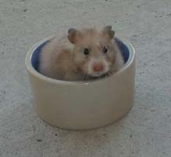

| Feature Hamster |
| Yellow Black is the combined color of Black and Yellow. It is a very useful color in breeding the black tortoiseshell and black tri-colors which are so popular in the US right now. They should be Yellow in color with noticeable black tipping. Overwhelmingly, though, ours on the West Coast of the US are too pale and lack the black tipping. In most cases, you can't tell a yellow from a yellow black, and some of our yellows and yellow blacks even look like creams.. Below are pictures of yellow blacks with good and with bad tipping. |
| Typical Yellow Black Male (poor tipping) |
| Long Haired Yellow Black Female (good tipping) |
| One of the interesting things I noticed with the yellow blacks with good tipping is the process by which the tipping appears on the hamster. The niece of the above Yellow Black female is going through this process right now. I believe she is a Light Gray Pearl Black (not a standardized color but genetically aaLglgToTo). Her father is a Light Gray Pearl (AaLglgToY) while her mother is a Black Tortoiseshell (aaToto). The tipping starts at about six weeks of age with a "moustache." It progresses to the "5 o'clock shadow," and I expect it to continue progressing up the face and across the back. I will document the process as it occurs on this youngster. |
 |
| A different shade of Yellow Black again with little black tipping |
| Light Gray Pearl Black youngster at 40 days of age. The moustache is just starting. |
| Day 46 |
|  |
| Day 48 |
| Just for contrast, here is an agouti Yellow satin. They are very difficult to find in the US. She does carry black but does not have two black genes. You can see the cheekflashes and lighter belly signifying that she is agouti and not self like the Yellow Blacks. Her markings should be stronger. |